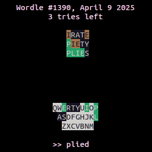

-
ASCII Art Shader
I made this as a way to learn GLSL because graphics has always been a field that fascinates me. It's a WebGL shader converting live imagery to ASCII art, using edge detection & local contrast to preserve high-frequency details where possible. It can be configured to generate line art or shaded art, and works in both color and black and white.
-

WordleArchive
I wrote this CLI app in C++ when the Wordle Archive website was shut down so that my grandpa could still play through the backlog of Wordles. It supports several different play modes, including using a custom word list with any length of words. He enjoyed it so much that he's still using it to try out various starting words and strategies.